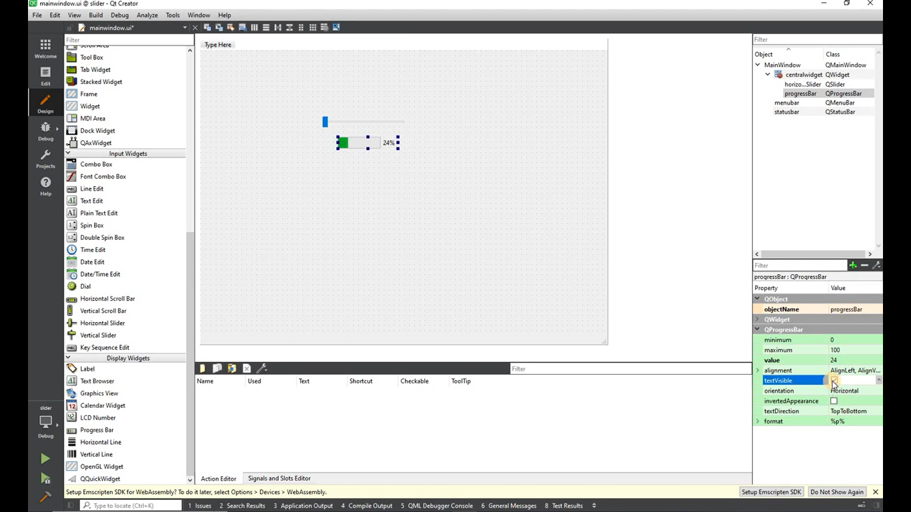
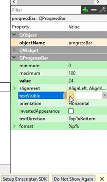
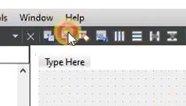
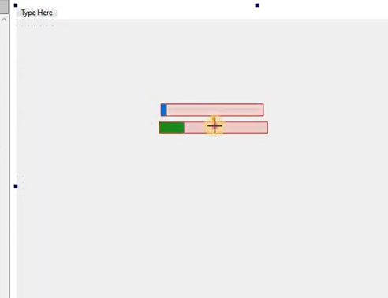
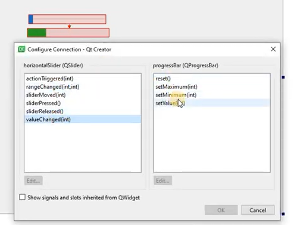
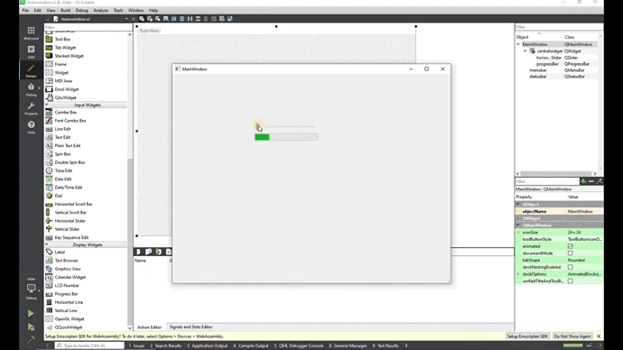

Duas formas de fazer Slider
Para essa aplicação é necessário saber um pouco sobre Slider;
O controle deslizante é o widget clássico para controlar um valor limitado. Ele permite que o usuário mova uma alça deslizante ao longo de uma ranhura horizontal ou vertical e traduz a posição da alça em um valor inteiro dentro do intervalo legal.
Neste tutorial veremos duas formas de criar um controle deslizante.
Primeira forma de criar um controle deslizante
Na parte de design vamos utilizar um HorizontalSlider e uma ProgressBar.
Pode-se tirar a porcentagem da barra de progresso indo na tabela de propriedades, localizada no canto inferior direito. Assim o texto não ficará visível:
Para interligar o Horizontal Slider e a Progress Bar deve-se clicar na segunda opção da barra preta, localizada na parte superior da tela.
Após a seleção é possível puxar uma seta vinda do Horizontal Slider para a Progress Bar.
Em seguida selecione valueChanged(int) e depois setValue(int)
Ao executar podemos notar que a barra de progresso se move de acordo com o slider que puxamos.
Segunda forma de criar um controle deslizante
Na parte de design vamos utilizar um HorizontalSlider e um PushButton. Devemos adicionar a função que vai interligar o slider a barra de progresso. A função é ativada ao clicar do lado direito do mouse no Horizontal Slider;
Depois selecione valueChanged(int);
Após clicar em OK você será direcionado ao mainwindow.cpp, local que vamos programar.
Para iniciar a programação dessa aplicação vamos interligar a Horizontal Slider ao Progress Bar:
void MainWindow::on_horizontalSlider_valueChanged(int value)
{
ui->progressBar->setValue(value);
}
Código da mainwindow.cpp
mainwindow.cpp
#include "mainwindow.h"
#include "./ui_mainwindow.h"
MainWindow::MainWindow(QWidget *parent)
: QMainWindow(parent)
, ui(new Ui::MainWindow)
{
ui->setupUi(this);
}
MainWindow::~MainWindow()
{
delete ui;
}
void MainWindow::on_horizontalSlider_valueChanged(int value)
{
ui->progressBar->setValue(value);
}
Ao executar podemos notar que a barra de progresso se move de acordo com o slider que puxamos.